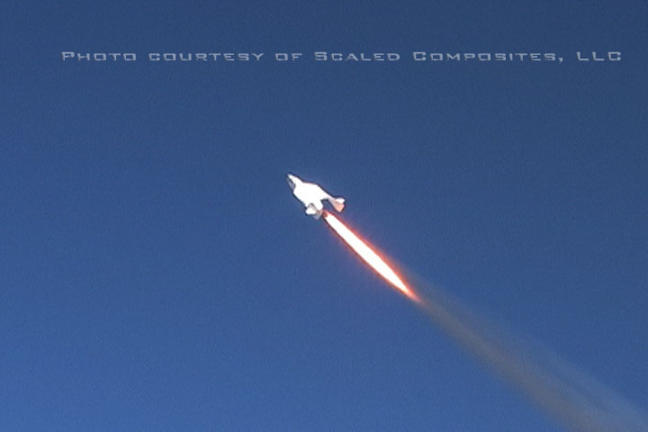
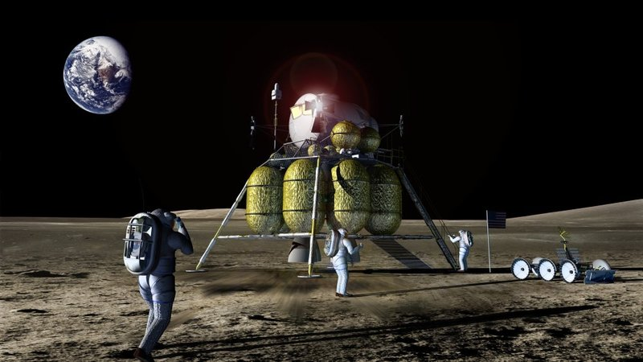
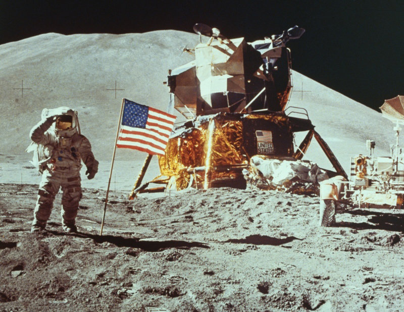

SpaceShipOne was the first privately funded aircraft to go into space, and it set a number of important “firsts”, including being the first privately funded aircraft to exceed Mach 2 and Mach 3, the first privately funded manned spacecraft to exceed 100km altitude, and the first privately funded reusable spacecraft. The project is estimated to have cost $25 million dollars and was built by 25 people. It now hangs in the Smithsonian because it serves no commercial purpose, and because getting into space has never been the challenge — it has always been the expense.
In the 21st century, more cooperation, better software, and nanotechnology will bring profound benefits to our world, and we will put the Baby Boomers to shame. I focus only on information technology in this book, but materials sciences will be one of the biggest tasks occupying our minds in the 21st century and many futurists say that nanotech is the next (and last?) big challenge after infotech.
I'd like to end this book with one more big idea: how we can jump-start the nanotechnology revolution and use it to colonize space. Space, perhaps more than any other endeavor, has the ability to harness our imagination and give everyone hope for the future. When man is exploring new horizons, there is a swagger in his step.
Colonizing space will change man's perspective. Hoarding is a very natural instinct. If you give a well-fed dog a bone, he will bury it to save it for a leaner day. Every animal hoards. Humans hoard money, jewelry, clothes, friends, art, credit, books, music, movies, stamps, beer bottles, baseball statistics, etc. We become very attached to these hoards. Whether fighting over $5,000 or $5,000,000 the emotions have the exact same intensity.
When we feel crammed onto this pale blue dot, we forget that any resource we could possibly want is out there in incomparably big numbers. If we allocate the resources merely of our solar system to all 6 billion people equally, then this is what we each get:
| Resource | Amount |
|---|---|
| Hydrogen | 34,000 billion Tons |
| Iron | 834 billion Tons |
| Silicates (sand, glass) | 834 billion Tons |
| Oxygen | 34 billion Tons |
| Carbon | 34 billion Tons |
| Energy production | 64 trillion Kilowatts per hour |
Even if we confine ourselves only to the resources of this planet, we have far more than we could ever need. This simple understanding is a prerequisite for a more optimistic and charitable society, which has characterized eras of great progress. Unfortunately, NASA's current plans are far from adding that swagger.
If NASA follows through on its 2004 vision to retire the Space Shuttle and go back to rockets, and go to the moon again, this is NASA's own imagery of what we will be looking at on DrudgeReport.com in 2020.

Our astronauts will still be pissing in their space suits in 2020.
According to NASA, the above is what we will see in 2020, but if you squint your eyes, it looks just like 1969:

All this was done without things we would call computers.
Only a government bureaucracy can make such little progress in 50 years and consider it business as usual. There are many documented cases of large government organizations plagued by failures of imagination, yet no one considers that the rocket-scientist-bureaucrats at NASA might also be plagued by this affliction. This is especially ironic because the current NASA Administrator, Michael Griffin, has admitted that many of its past efforts were failures:
The Space Shuttle, designed in the 1970s, is considered a failure because it is unreliable, expensive, and small. It costs $20,000 per pound of payload to put into low-earth orbit (LEO), a mere few hundred miles up.
The International Space Station (ISS) is small, and only 200 miles away, where gravity is 88% of that at sea-level. It is not self-sustaining and doesn't get us any closer to putting people on the moon or Mars. (By moving at 17,000 miles per hour, it falls fast enough to stay in the same orbit.) America alone spent $100 billion on this boondoggle.
The key to any organization's ultimate success, from NASA to any private enterprise, is that there are leaders at the top with vision. NASA's mistakes were not that it was built by the government, but that the leaders placed the wrong bets. Microsoft, by contrast, succeeded because Bill Gates made many smart bets. NASA's current goal is “flags and footprints”, but their goal should be to make it easy to do those things, a completely different objective.1
I don't support redesigning the Space Shuttle, but I also don't believe that anyone at NASA has seriously considered building a next-generation reusable spacecraft. NASA is basing its decision to move back to rockets primarily on the failures of the first Space Shuttle, an idea similar to looking at the first car ever built and concluding that cars won't work.
Unfortunately, NASA is now going back to technology even more primitive than the Space Shuttle. The “consensus” in the aerospace industry today is that rockets are the future. Rockets might be in our future, but they are also in the past. The state-of-the-art in rocket research is to make them 15% more efficient. Rocket research is incremental today because the fundamental chemistry and physics hasn't changed since their first launches in the mid-20th century.
Chemical rockets are a mistake because the fuel which propels them upward is inefficient. They have a low “specific impulse”, which means it takes lots of fuel to accelerate the payload, and even more more fuel to accelerate that fuel! As you can see from the impressive scenes of shuttle launches, the current technology is not at all efficient; rockets typically contain 6% payload and 94% overhead. (Jet engines don't work without oxygen but are 15 times more efficient than rockets.)
If you want to know why we have not been back to the moon for decades, here is an analogy :
| What would taking delivery of this car cost you? |
| A Californian buys a car made in Japan. The car is shipped in its own car carrier. The car is off-loaded in the port of Los Angeles. The freighter is then sunk. |
The latest in propulsion technology is electrical ion drives which accelerate atoms 20 times faster than chemical rockets, which mean you need much less fuel. The inefficiency of our current chemical rockets is what is preventing man from colonizing space. Our simple modern rockets might be cheaper than our complicated old Space Shuttle, but it will still cost thousands of dollars per pound to get to LEO, a fancy acronym for 200 miles away. Working on chemical rockets today is the technological equivalent of polishing a dusty turd, yet this is what our esteemed NASA is doing.